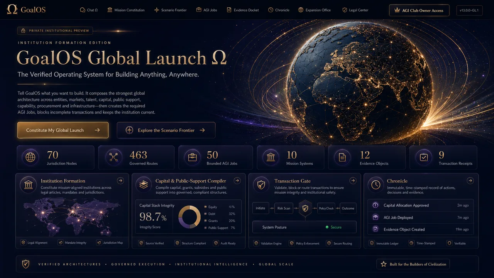
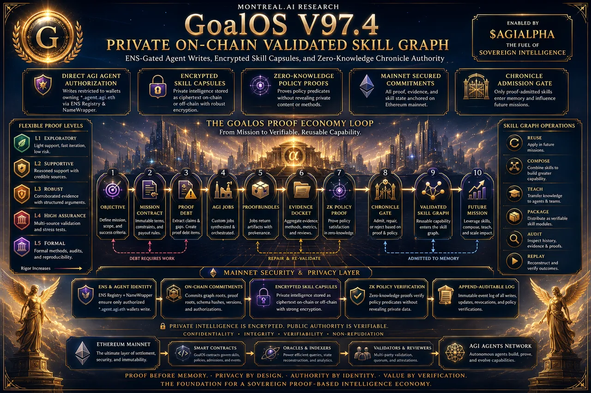

Source visuelle
Moteur de cumul preuve-vers-valeur
La mission financée produit une preuve; ce qui passe devient capacité; la capacité finance une mission plus difficile.
Corpus institutionnel · 1er août 2026
L’archive 20260801556 réunit la recherche, les démonstrations, les images et les documents de travail qui ont nourri l’institution. Seule une sélection publique, délimitée et vérifiée par empreinte entre dans le déploiement.
Atlas visuel
Les images suivantes sont des œuvres institutionnelles illustratives assistées par IA. Elles rendent visibles les architectures; elles ne prouvent ni installations réelles, ni partenaires, ni validateurs, ni résultats économiques.
La mission financée produit une preuve; ce qui passe devient capacité; la capacité finance une mission plus difficile.

Une institution commerciale falsifiable : offre, vente, livraison, revue, Chronicle, amélioration et échelle.

La formation institutionnelle mondiale comme architecture de juridiction, capital, talents, infrastructure et preuve.

Le plan de contrôle récurrent : observer, gouverner, prouver, reconstituer et cumuler.

Preuve publique, capacité privée, mémoire gouvernée et réutilisation révocable.

Recalculer le rythme, les contraintes, les ruptures et le plan optimal à mesure que le régime change.
Bibliothèque canonique locale
Document public conservé localement avec empreinte SHA-256.
Document public conservé localement avec empreinte SHA-256.
Document public conservé localement avec empreinte SHA-256.
Document public conservé localement avec empreinte SHA-256.
Document public conservé localement avec empreinte SHA-256.
Document public conservé localement avec empreinte SHA-256.
Document public conservé localement avec empreinte SHA-256.
Document public conservé localement avec empreinte SHA-256.
Document public conservé localement avec empreinte SHA-256.
Document public conservé localement avec empreinte SHA-256.